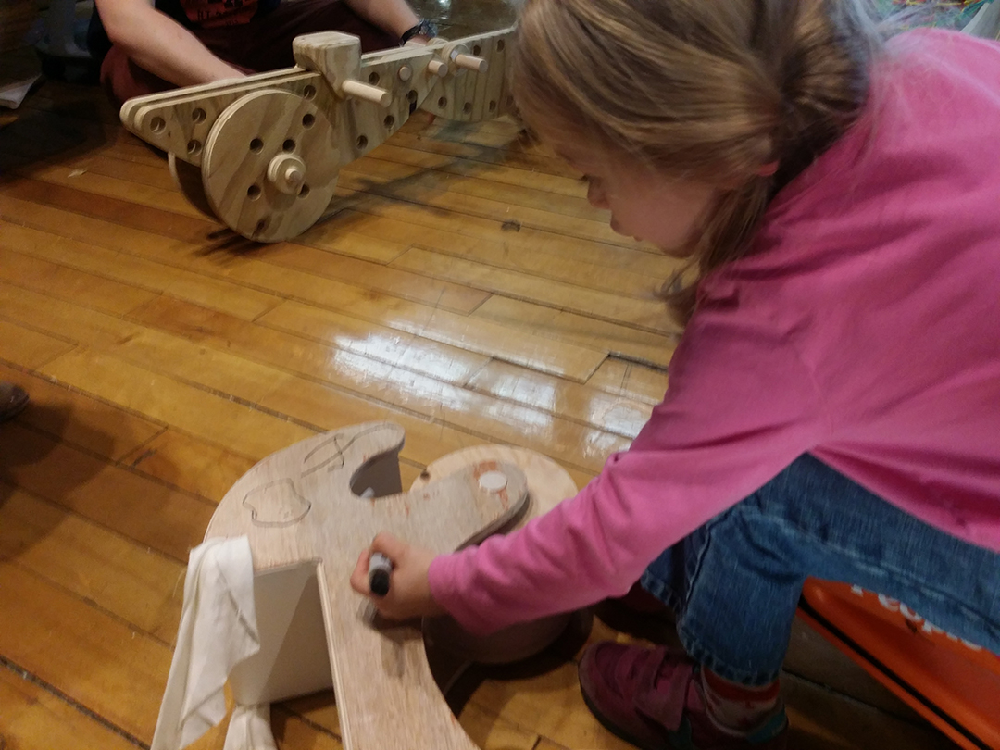
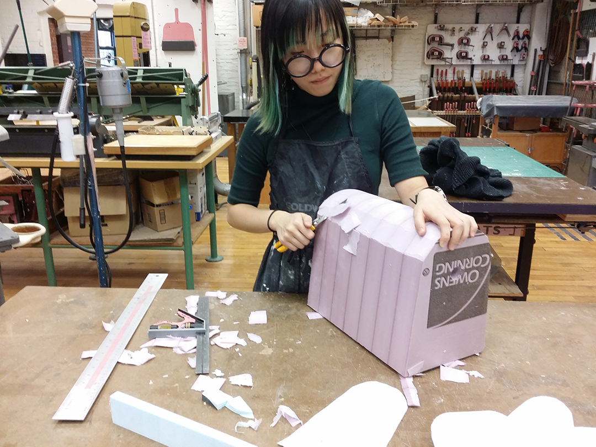
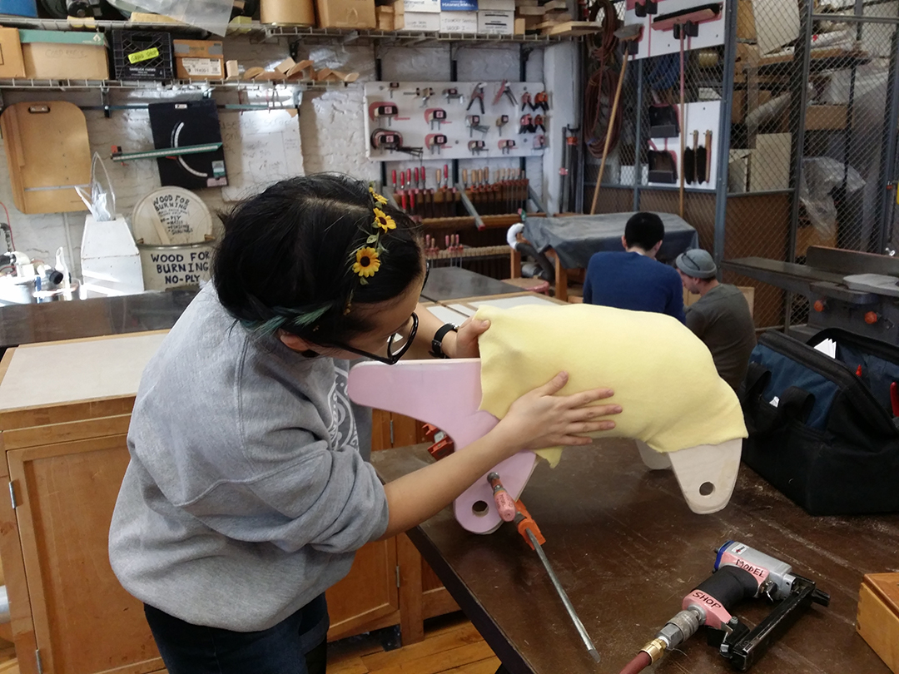

Manny

As children, we escape the bounds of reality on our imaginary steeds: whether a rusty race car, a runt unicorn, or a giant snail. In becoming the dream ride-on toy for 3 to 6 year old children, Manny acts as a character who happens to have a lot to say. Manny is:
Responsive in a way that educates for sensory play
As observed from the toy market for children under 10 years of age, it is popular to include materials that attribute to a child's ability to recognize the five senses. Manny, aside from having a soft felt seat, features squeakers in the ears and saddle. A big surprise to any kid who sits and drives Manny!Whimsical and inspires open-ended role playing and character development
Inspired by the unique tapir, Manny is acceptably mistaken for a rabbit, giraffe, pig, dog, and much more. It's up to the child to create the lore and personality that makes up this noisy critter.Process
Quick 3D sketches investigated options in ergonomics, functionality, accessibility to the features, and balance. Over the course of three days, children (ages three to six years) visited the studio for user testing. The observations were organized in the categories:- "Where can I sit?"
- "Let me play with..."
- "Who are you?"
|  |  |  |
With many thanks to our participants, the drawing board was revisited to accommodate comfort, sensational play, and character! Explorations of lamination and interchangeable parts allowed for considerations of mass production and a family of tapoots.